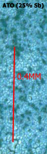

Most descriptions of obtaining Tin Oxide coatings on Ti have been achieved via SnCl4:5H2O(Stannic Chloride Pentahydrate). The following describes a method that works.
Grade one Ti was cut to the size required and the edges and bottom was rounded using a file. The Ti was then drilled using a drill of similar thickness to the Ti. Ti should be in the region of 1 to 1.5mm thick.
The holes were spaced apart by an amount equal to the diameter of the holes. A center punch (or a masonry nail) was required to make a dent where holes were required so they were drilled where they were planned. The holes were countersunk using a dill bit approx. three times the diameter of the holes.
The drilled Ti was etched in hot (85°C minimum) 20% hardware store HCl for approx. two hours (or more) to etch the surface and to round all sharp corners. Make sure the Ti has been etched enough especially Ti that has been used before for ATO as it can take some time to totally remove all contamination. The etched Anode is then washed in distilled water or solvent(it is important to keep the Ti extremely clean at this stage). Another washing method used is to rinse the Anode in clean 20% HCl, give it a shake to get rid of access HCl and then dip into the precursor without drying. Keep the Anode upright or/and dry the unetched part with a cloth so that there is no run-off down from the top unetched part onto the etched (clean) area. It may be beneficial to bolt a handle of some sort to the top of the Ti for handling purposes.
The Anode would benefit from being sandblasted (according to many sources) at this stage.
The Anode is usually dried before coating.
|
 |
The etched Ti is now then coated with 9 coats (9 bakes) of ATO (Antimony/Tin Oxide) using the ATO precursor solution of SnCl4:5H2O + Sb Trichloride + HCl + Alcohol.
The ATO precursor solution was made up of:
- 30 ml Alcohol (distilled Methylated Spirits can be used)
- 5 ml 33% HCl (or 6ml 27% (SpG=1.135) HCl)
- 15 grams SnCl4:5H2O
- 5.2 grams Sb Trichloride solution (homemade SbCl3 solution containing 31.8% Sb)
The Alcohol and HCl should be mixed first. The Sb Trichloride was made from Sb Trioxide as described elsewhere on this page.
The ATO solution is brushed on to the Ti and the Ti let drip dry by hanging for five minutes. The Ti is then given a good shake or sharp knock(s) on a clean surface to get rid of excess solution and dried using a heat gun.
It is important to keep the Ti moving when drying, to stop the ATO precursor from forming puddles. Also hold the Ti in such a way that solution does not run down from the unetched part to the etched part as this will contaminate the very clean surface and cause streaking or failed coats. A better method of applying the ATO solution is to obtain a tall narrow container for the solution and place the Ti into it for a soak. This seems to give more even coatings that brushing with less streaking. The precursor can also be applied using a small plastic pipette.
Another coat of ATO precursor is put on as before and dried using the heat gun. This is done a third time. The Ti is then baked at 480C to 490C for approx. seven minutes. This is repeated a further 8 times or so. Up to 20 coats have been applied. When the last coat of solution is applied a final bake at 490C for one hour is performed.
The Ti will now have a black/blue coating (not a bright blue as per the false looking blue as seen under a microscope) that looks like cracked mud under 100X magnification. If this was a first attempt at applying an ATO coating to Ti it would be prudent to test the coating to see if it has been applied successfully.
|
|
Since SnCl4:5H2O can be made from Tin metal + Aqua Regia the above could be realized using Tin metal + Antimony metal + Aqua regia (or Tin/Antimony solder). It would be wise to seperate the solid SnCl4:5H2O after making it so that a better understanding of how the process works is obtained. I have not tried this.